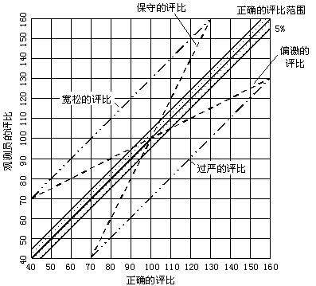

评比的训练
为了进行正确的评比，对时间研究人员进行培训是很有必要的。因为不但要求每个时间研究人员使他自己的评比前后保持一致，而且要求一个企业内的时间研究人员，每个人的评比系数也要保持一致(或至少应在标准值的±5%内)，否则评比的不一致不但会使标准发生偏差，而且会由于对工人的考察宽严不一，引起矛盾。
应用最广泛的、最经济有效的评比训练，是将同一操作的快、正常、慢的三种不同的操作速度，拍摄成影片让受训者反复观看，使他们的头脑中逐渐形成正常速度的概念。然后再让他们观看各种不同速度的操作，并给予评比。将他们给予评比系数与影片所标示的正确系数相比较，从而纠正自己不准确的判断。如此反复地进行培训，使正常的速度观念在时间研究人员头脑中根深蒂固。时间研究人员是否掌握了“评比”，可用评比测验图进行考核。
评比测验图如图9-5所示，正确的评比为横坐标，观测员的评比为纵坐标。评比容差为±5%，如果观测员在受训时，所做的评比在±5%范围内，则认为其评比为正常。图9-5中虚线所示的为保守的评比和偏激的评比，点划线为过宽和过严的评比。

图9-5 评比测验图